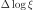
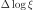

4.1.39. Warm: continuous photoionised absorption model¶
The warm model is a multi-component version of the xabs model. In
the warm model, we construct a model for a continuous distribution of
column density as a function of  . It is
in some sense comparable to the differential emission measure models
used to model the emission from multi-temperature gas. Here we have
absorption from multi-ionization gas. Depending upon the physics of the
source, this may be a better approximation than just the sum of a few
xabs components. A disadvantage of the model may be (but this also
depends upon the physics of the source), that all dynamical parameters
for each value of are the same, like the outflow velocity
and turbulent broadening. If this appears to be the case in a given
source, one may of course avoid this problem by taking multiple,
non-overlapping warm components.
. It is
in some sense comparable to the differential emission measure models
used to model the emission from multi-temperature gas. Here we have
absorption from multi-ionization gas. Depending upon the physics of the
source, this may be a better approximation than just the sum of a few
xabs components. A disadvantage of the model may be (but this also
depends upon the physics of the source), that all dynamical parameters
for each value of are the same, like the outflow velocity
and turbulent broadening. If this appears to be the case in a given
source, one may of course avoid this problem by taking multiple,
non-overlapping warm components.
The model assumes a logarithmic grid of  equidistant values of
, between a lower limit and an upper limit
. For each of the grid points , a value of
can be adjusted; here is given as
evaluated at
, where the differential column density is assumed to be a
continuous function of . At each intermediate point, the
value of is then determined by doing cubic spline interpolation in the
– space. In order not to consume too much
computer time, the step size for numerical integration
 can be set. A typical, recommended value for this
(the default) is 0.2.
equidistant values of
, between a lower limit and an upper limit
. For each of the grid points , a value of
can be adjusted; here is given as
evaluated at
, where the differential column density is assumed to be a
continuous function of . At each intermediate point, the
value of is then determined by doing cubic spline interpolation in the
– space. In order not to consume too much
computer time, the step size for numerical integration
 can be set. A typical, recommended value for this
(the default) is 0.2.
For more information on this model, the atomic data and parameters we refer to Different types of absorption models.
The parameters of the model are:
xil1 : of the lower limit of the ionisation
parameter range in units of  W m. Default value: -4.
W m. Default value: -4.xil2 : of the upper limit of the ionisation
parameter range in units of W m. Default value: 5.npol : The number of grid points for the grid,
including the end points for . Default value: 19; lower
values are generally recommended; minimum value is 2.dxi : step size for numerical integration .
Default value: 0.2.f01...f19 : Values of
 at the grid points. Default values
at the grid points. Default values  . When
npol, the remaining values of are simply
ignored.
. When
npol, the remaining values of are simply
ignored.The following parameters are common to all our absorption models:
fcov : The covering factor of the absorber. Default value: 1 (full
covering)v : Root mean square velocity rms : Rms velocity  of line blend
components
of line blend
componentsdv : Velocity distance  between different blend
components
between different blend
componentszv : Average systematic velocity  of the absorber
of the absorbercol : File name for the photoionisation
balance parametersRecommended citation: Steenbrugge et al. (2005)